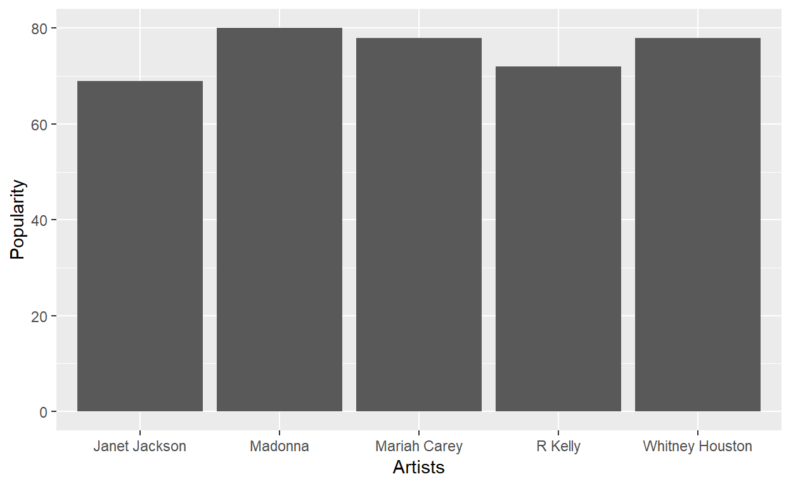
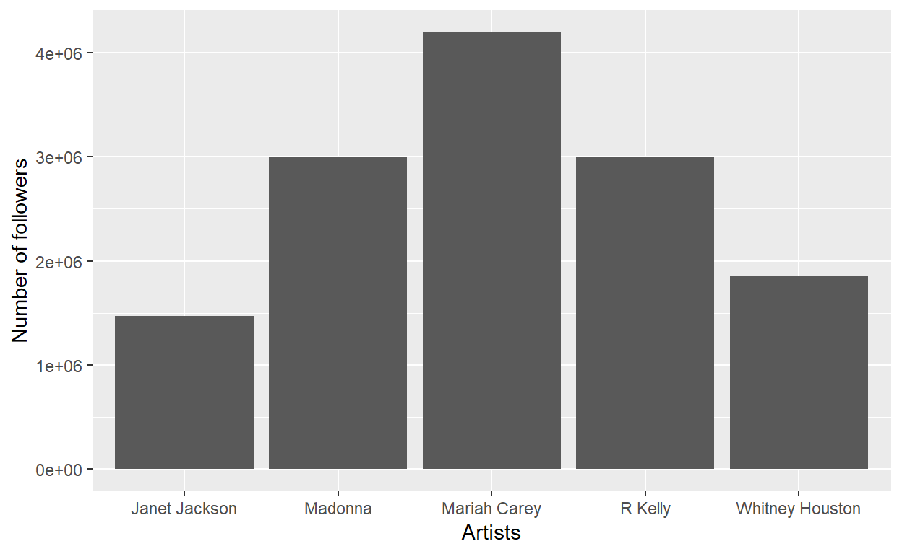
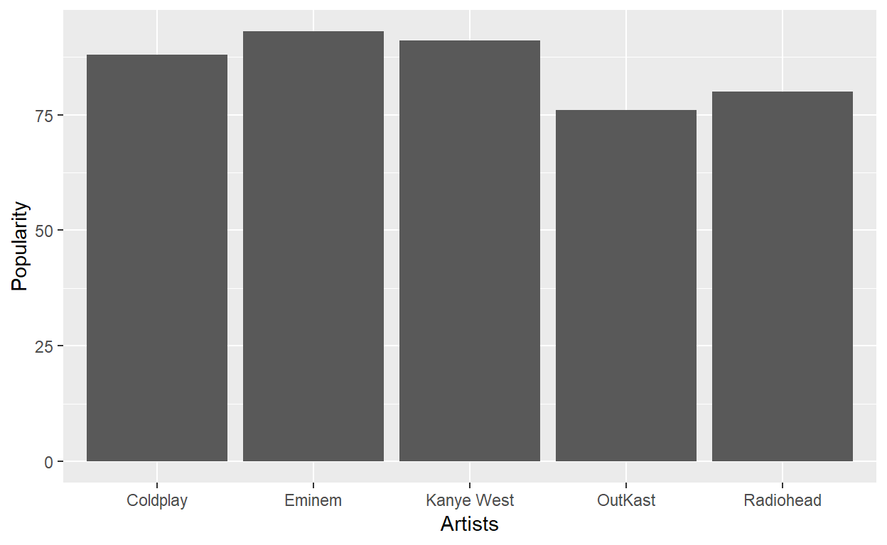
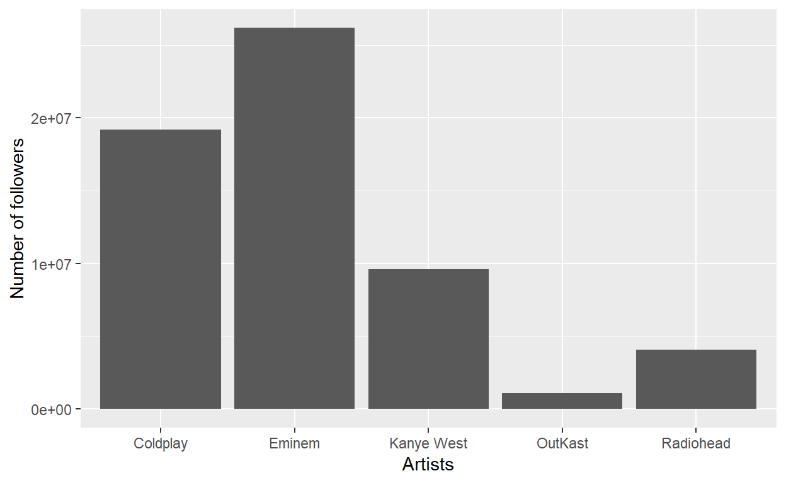
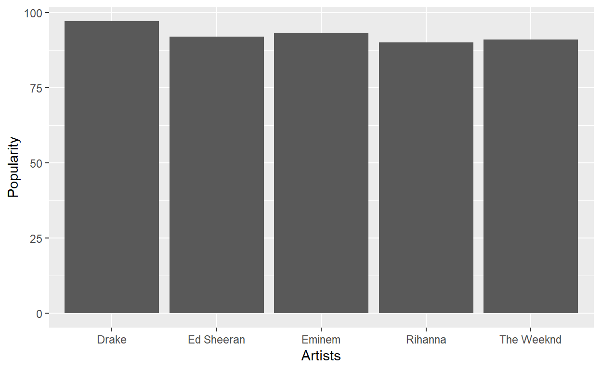
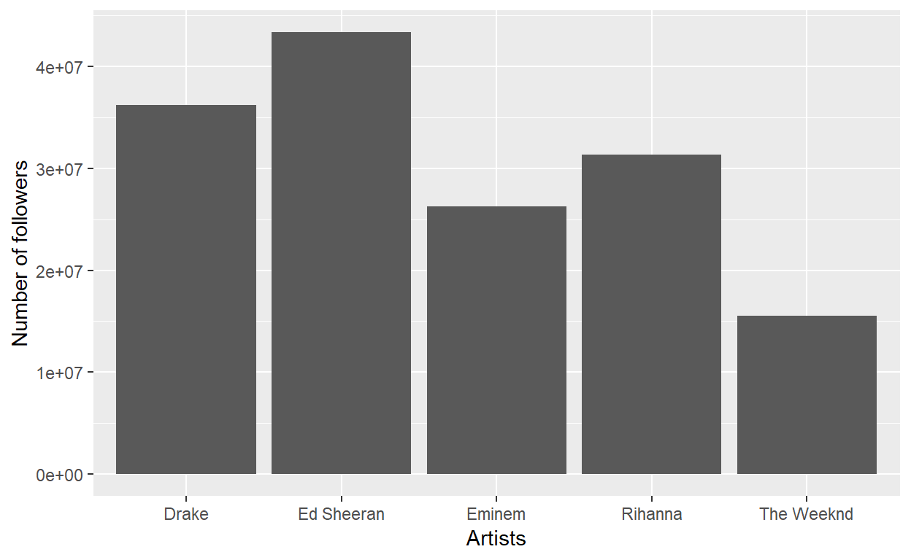

Spotifyr application
Let’s compare how musical taste changed over the last three decades. Let’s find who were the top 5 most popular artists in the 1990’s, 2000’s and 2010’s, what their musical genres were, how popular and how many followers they have on spotify, and also some features about their music such as energy, danceability, speechiness and tempo.
Sys.setenv(SPOTIFY_CLIENT_ID = 'ddfba0d81d8743599b32e3438d52e6c3')
Sys.setenv(SPOTIFY_CLIENT_SECRET = '33b2241bc4b74388909a355ac19a9504')
access_token <- get_spotify_access_token()According to rateyourmusic.com and based on number of hits and weeks charted, the top 5 artists in the 1990s are:
According to top40weekly.com, the top 5 artists in the 2000’s are:
According to the music-streaming service Spotify that launched almost 10 years ago and redefined how we listen to music, the top 5 artists of the 2010’s are:
use function “search_spotify()” to search for artist ID. For example:
search_spotify(q ="madonna", type = "artist" )
madonna = "6tbjWDEIzxoDsBA1FuhfPW"
mariah_carey = "4iHNK0tOyZPYnBU7nGAgpQ"
janet_jackson = "4qwGe91Bz9K2T8jXTZ815W"
whitney_houston = "6XpaIBNiVzIetEPCWDvAFP"
r_kelly = "2mxe0TnaNL039ysAj51xPQ"
Madonna <- get_artist(madonna)
Madonna_followers <- Madonna$followers$total
Madonna_popularity <- Madonna$popularity
Mariah_carey <- get_artist(mariah_carey)
Mariah_carey_followers <- Mariah_carey$followers$total
Mariah_carey_popularity <- Mariah_carey$popularity
Janet_jackson <- get_artist(janet_jackson)
Janet_jackson_followers <- Janet_jackson$followers$total
Janet_jackson_popularity <- Janet_jackson$popularity
Whitney_houston <- get_artist(whitney_houston)
Whitney_houston_followers <- Whitney_houston$followers$total
Whitney_houston_popularity <- Whitney_houston$popularity
R_kelly <- get_artist(r_kelly)
R_kelly_followers <- R_kelly$followers$total
R_kelly_popularity <- R_kelly$popularity
artists_1990_followers <- data.table(artists = c("Madonna",
"Mariah Carey",
"Janet Jackson",
"Whitney Houston",
"R Kelly"),
followers =
c(Madonna_followers,
Mariah_carey_followers,
Janet_jackson_followers,
Whitney_houston_followers,
R_kelly_followers),
popularity =
c(Madonna_popularity,
Mariah_carey_popularity,
Janet_jackson_popularity,
Whitney_houston_popularity,
R_kelly_popularity)
)
artists_1990_followers %>%
ggplot(aes(x= artists, y= popularity))+
geom_bar(stat = "identity")+
labs(x="Artists",y= "Popularity")
artists_1990_followers %>%
ggplot(aes(x= artists, y= followers))+
geom_bar(stat = "identity")+
labs(x="Artists",y= "Number of followers")
Similar code as previously.




Mariah_carey_genres <- Mariah_carey$genres
Madonna_genres <- Madonna$genres
Janet_jackson_genres <- Janet_jackson$genres
Whitney_houston_genres <- Whitney_houston$genres
R_kelly_genres <- R_kelly$genres
artists_genres_1990 <- data.table(artists = c("Madonna",
"Mariah Carey",
"Janet Jackson",
"Whitney Houston",
"R Kelly"),
genres = c(Mariah_carey_genres,
Madonna_genres,
Janet_jackson_genres,
Whitney_houston_genres,
R_kelly_genres)
)
artists_genres_1990 %>%
group_by(artists) %>%
mutate(genres = paste(genres, collapse = ', ')) %>%
unique() %>%
arrange(artists) %>%
paged_table()Pop was really popular in the 1990’s.
Similar code as previously.
Hip hop and rap became the most popular in the 2000’s.
Pop, hip-hop and rap dominate the 2010’s.
From the previous analysis, it is interesting to notice that pop was very popular in the 1990s but not so much in the 2000’s. However, it made a strong comeback in the 2010’s. Also, rap became one of the most popular genre in the 2000’s and still very popular in the 2010’s. How have these popular genres evolved across the decades?
let’s compare the audio features between the pop genre of the 1990’s and that of the 2010’s. Let’s select one of the most successful pop artist from each decade and compare the mean audio features of all of their songs.
pop_1990 <- get_artist_audio_features('mariah carey')
Pop_1990 <-
pop_1990 %>%
select(energy, danceability, speechiness, tempo) %>%
summarize(mean_energy = mean(energy),
mean_danceability = mean(danceability),
mean_speechiness = mean(speechiness),
mean_tempo = mean(tempo)) %>%
mutate(years= "1990s")
pop_2010 <- get_artist_audio_features('ed sheeran')
Pop_2010 <-
pop_2010 %>%
select(energy, danceability, speechiness, tempo) %>%
summarize(mean_energy = mean(energy),
mean_danceability = mean(danceability),
mean_speechiness = mean(speechiness),
mean_tempo = mean(tempo)) %>%
mutate(years= "2010s")
Pop_1990_2010 <- rbind(Pop_1990, Pop_2010) %>%
select(years, mean_energy, mean_danceability, mean_speechiness,
mean_tempo)
paged_table(Pop_1990_2010)1990’s pop has more energy and more tempo then 2010’s but is less danceable and uses fewer words.
Let’s do the same with the rap genre of the 2000’s and that of the 2010’s.
Rap from the 2000s and from the 2010s have similar danceabilities and tempos. However, 2010’s rap is much less energetic and uses much less words than 2000’s rap.
Music is evolving the same way our life is. The music our parents listened to is radically different from what we listen to now. Music is a fingerprint of our taste and is able to capture the essence of what makes each decade so special! Grab your phone and your headphones and enjoy some great music!